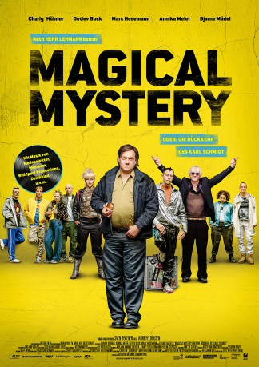

IMDB-Wertung: 6.7 / 10
IMDB-Wertung: 6.7 / 10  Metascore:
Metascore: 
Years after a nervous breakdown Karl goes on tour with old friends and upcoming electronic music DJs. Beeing the only sober person in a environment full of drugs and alcohol starts to bring back demons.
 IMDB-Wertung: 6.7 / 10 Metascore:
Years after a nervous breakdown Karl goes on tour with old friends and upcoming electronic music DJs. Beeing the only sober person in a environment full of drugs and alcohol starts to bring back demons.
Jahr: 2017
Dauer: 111 Minuten
FSK:
Land: Deutschland Studio: DCM Film DistributionTonspuren:
Untertitel:
Auflösung: 1080p (1920x808) Größe: 10004 MB
Genre: Komödie
Regisseur: Arne Feldhusen
Drehbuch: Sven Regener
Soundtrack: Deichkind, Carsten Meyer, Modeselektor, Patrick Reising, Westbam, Francesco Wilking
Darsteller:
 Marc Hosemann als Raimund Schulte
Marc Hosemann als Raimund Schulte Bjarne Mädel als Werner
Bjarne Mädel als Werner Chris Theisinger als Gast in der Sushi Bar
Chris Theisinger als Gast in der Sushi Bar Detlev Buck als Ferdi
Detlev Buck als Ferdi David Bredin als Heinz-Rüdiger Bartels
David Bredin als Heinz-Rüdiger Bartels Harald Burmeister als Herr Niemeyer
Harald Burmeister als Herr NiemeyerDatei: X:\2017(G-M)\Magical Mystery oder die Rückkehr des Karl Schmidt (2017, FSK, 1920x808).mkv seit 12.02.2018
Festplatte: HD 2017(A-Z)-2018(A-F)
 Es gibt insgesamt 148 Filme in der Gruppe '2017(G-M)'
Es gibt insgesamt 148 Filme in der Gruppe '2017(G-M)'